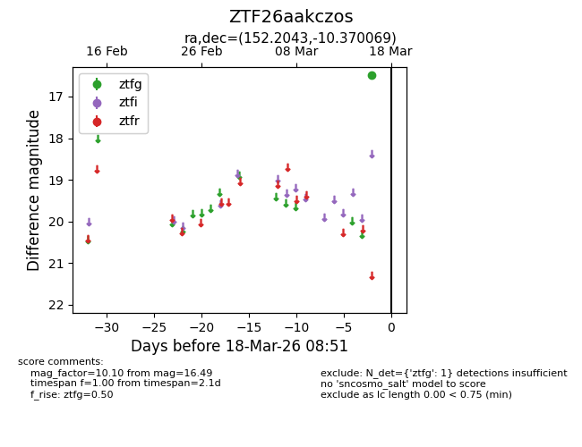
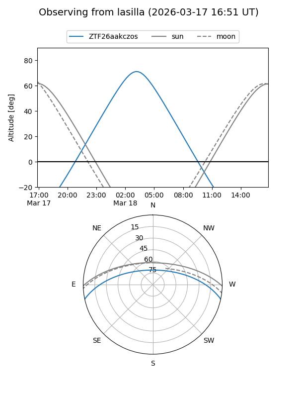
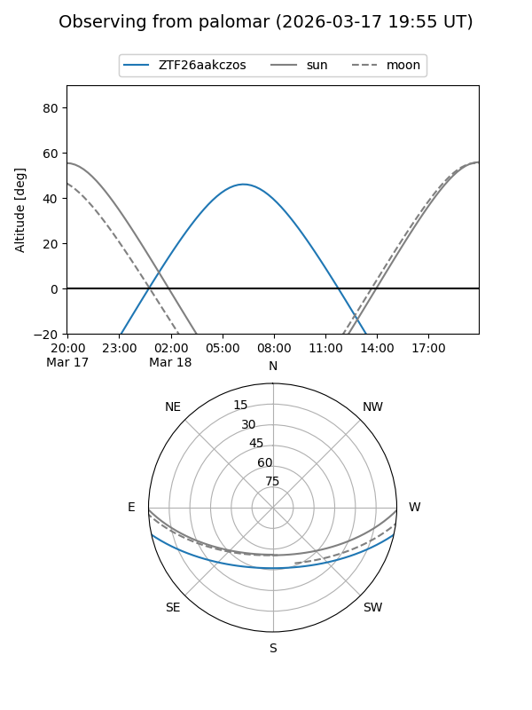

ZTF26aakczos
Target ZTF26aakczos at 2026-03-18 08:53
Aliases and brokers:
FINK: link
Lasair: link
ALeRCE: link
alt names
ZTF26aakczos (ztf,fink_ztf)
Coordinates:
equatorial (ra, dec) = 152.2043,-10.37007
equatorial (HMS+DMS) = 10:08:49.03,-10:22:12.25
galactic (l, b) = (250.9200,+35.59670)
Flags:
Photometry:
last ztfg=16.49
1 ztfg detections
Lightcurve

Visibility


Additional plots